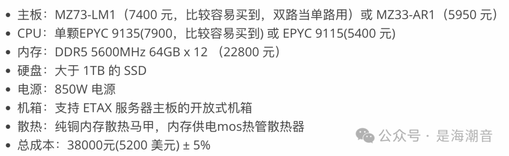

三万八千八，DeepSeek带回家

目前通过Ollama等工具本地部署的 DeepSeek，基本都是蒸馏版，受限于硬件资源，个人开发者较难部署满血版DeepSeek，最近中国科学院自动化研究所和腾讯玄武实验室分别实践了满血版部署和纯 CPU 本地化部署的实践。
满血版DeepSeek部署
中国科学院自动化研究所和中科闻歌联合推出的DeepSeek-V3/R1 满血版 671B 全参数微调的开源解决方案
https://github.com/ScienceOne-AI/DeepSeek-671B-SFT-Guide/blob/main/README_zh.md
1. 硬件配置
单台服务器配置如下:

集群中共 32 台相同配置的机器，共享 100TB 存储空间，挂载路径为 /nfs。
机器之间使用 IB 网络进行通信，GPU 之间通过 NVLink 通信
按照H100 80G 一块显卡2W美元估计，共需要2W832 = 512W美元
这里使用集群是因为需要继续微调，如果只需要进行推理，则8块
2. 环境配置
基于 xtuner 框架进行扩展和改进，使其支持 Deepseek V3/R1（即 DeepseekV3ForCausalLM 模型架构）的全参数微调 支持数据并行（DeepSpeed ZeRO based DP）和序列并行（Sequence Parallel, SP）。
安装 Python 环境 根据项目中 requirements.txt 安装依赖包， 将 ./code/xtuner 与 DeepseekV3ForCausalLM 训练相关的核心代码覆盖原始 xtuner package 的对应代码即可。
conda create -n ds_env python=3.10
conda activate ds_env
pip install -r requirements.txt
# 覆盖核心代码 这里修改为你的环境路径
YOUR_ENV_PATH='/nfs/miniconda3/envs/ds_env/lib/python3.10/site-packages'
cp -r ./code/xtuner $YOUR_ENV_PATH
3. 数据准备
基于 OpenAI 标准数据格式进行扩展以兼容 reasoning 数据，每条原始训练数据格式如下。如果有思考过程，则 assistant 角色的 reasoning_content 字段非空。
{
"messages": [
{"role": "system", "content": "You are a helpful assistant."},
{"role": "user", "content": "用户问题"},
{"role": "assistant", "content": "最终回答", "reasoning_content": "思考过程"}
]
}
为了简化处理逻辑，我们将 reasoning_content 和 content 按照 Deepseek 的训练格式合并到 content 字段中。此外，为了兼容多轮对话的训练逻辑，还为 assistant 角色的每轮添加了 loss 字段，仅对值为 true 的 content 内容计算 loss。
{
"messages": [
{"role": "system", "content": "You are a helpful assistant."},
{"role": "user", "content": "用户问题"},
{"role": "assistant", "content": "<think>\n思考过程\n</think>\n\n最终回答", "loss": true}
]
}
data sample:
<｜begin▁of▁sentence｜>You are a helpful assistant.<｜User｜>用户问题<｜Assistant｜><think>\n思考过程\n</think>\n\n最终回答<｜end▁of▁sentence｜>
4. 启动训练
训练代码和训练启动脚本，其中：
./code/scripts/sft_deepseek.py：sft训练所需的配置文件，包括超参数设置、model和tokenizer配置、训练策略等，模型训练相关的配置均在此文件修改。./code/scripts/sft_deepseek.sh：sft训练启动脚本，该脚本为单个节点的执行文件，因此需要通过 slurm 或 pdsh 在每台机器执行。对于每台机器，训练启动命令的唯一不同为NODE_RANK值，如果共 32 台机器，则该编号分别从 0 到 31。
以 pdsh 为例，启动训练需要以下步骤：
将本项目 ./model中提供的包含训练所需代码逻辑的modeling_deepseek.py文件覆盖从 huggingface 等托管平台下载的对应原始文件；使用 pdsh 启动训练，在 0 号机器执行命令 pdsh -R ssh -w node[0-31] 'bash ./code/scripts/sft_deepseek.sh'，即可启动 32 台机器的模型全参数微调任务。其中，node[0-31] 需根据你的机器 hostname 或 IP 地址进行修改。训练过程中，可通过 tensorboard 对训练过程（loss变化等）进行可视化。
5. 模型权重转换
训练过程中建议使用至少 100TB 的 SSD 大容量存储，因为单个 pth 中间结果大约占 7.4TB 硬盘空间。
训练完成后，我们需要将 pth 转换为主流推理框架（如vllm等）较好兼容的 huggingface 格式。
在单台机器节点执行 bash ./code/scripts/convert_pth_to_hf.sh 即可完成模型权重格式转换，可根据实际情况修改脚本中的 pth 路径和权重保存路径。
需要注意的是，由于本过程对 CPU 内存有较大需求，因此可以通过虚拟内存进行扩展，防止 Out-of-memory。Swap（交换分区） 是 Linux 的虚拟内存，作用是当物理内存（RAM）不够用时，把部分数据存入磁盘，释放 RAM。
sudo fallocate -l 8192G /tmp/swapfile # 创建 8T 交换文件
sudo chmod 600 /tmp/swapfile
sudo mkswap /tmp/swapfile
sudo swapon /tmp/swapfile
free -h # 检查 swap 是否增加
6. 模型推理部署
使用 vLLM 对全参数微调后的模型进行简单部署测试（假设已经根据 vLLM 官网文档的指引创建了名为 vllm 的环境）。
如果使用 slurm 集群，可参考我们提供的脚本并执行 sbatch 命令 sbatch ./code/scripts/vllm_deploy_slurm.sh 即可提交作业。半精度（bf16/fp16）模型建议使用4台机器32卡进行部署，如需配置 ray 或 api server 的端口号，可自行修改 sh 文件。
如果需要通过 pdsh 启动部署（假设使用 node0~node3 四台机器），可参考以下步骤：
设置环境变量（node0~node3）。
export HEAD_ADDR="node0"
export DASHBOARD_PORT=8265
export HEAD_PORT=6379
export RAY_TMPDIR=/tmp/ray_tmp/
export RAY_ADDRESS=$HEAD_ADDR:$HEAD_PORT
启动 Ray Head（node0）。
pdsh -R ssh -w node0 "source /nfs/miniconda3/etc/profile.d/conda.sh && conda activate vllm && \
ray start --block --head --port=$HEAD_PORT --dashboard-port=$DASHBOARD_PORT --temp-dir=$RAY_TMPDIR"
启动 Ray Worker（node1~node3）。
pdsh -R ssh -w node1,node2,node3 "source /nfs/miniconda3/etc/profile.d/conda.sh && conda activate vllm && \
ray start --block --address=$HEAD_ADDR:$HEAD_PORT"
启动 vLLM（node0）。
pdsh -R ssh -w node0 "source /nfs/miniconda3/etc/profile.d/conda.sh && conda activate vllm && \
vllm serve /path/of/your/deepseek_sft_ckpt \
--tensor-parallel-size 8 \
--pipeline-parallel-size 4 \
--served-model-name deepseek-r1-sft \
--max-model-len 32768 \
--trust-remote-code \
--enable-reasoning \
--reasoning-parser deepseek_r1"
启动完成后，可通过 curl 命令测试接口是否正常启动：
curl -X POST http://node0:8000/v1/chat/completions -d '{"model": "deepseek-r1-sft", "messages":[{"role":"user", "content": "hello"}]}' -H "Content-Type: application/json"
稍等片刻后，如果终端输出符合预期的响应结果，则说明从训练到部署到整个过程顺利完成
穷人版DeepSeek部署
腾讯玄武实验室针对 DeepSeek 大模型纯 CPU 本地部署的推理探索与实践方案
https://mp.weixin.qq.com/s/vIrvbVJ6Nv00Ehre1zZwMw https://xlab.tencent.com/cn/2025/03/16/DeepSeek-671B%E7%BA%AFCPU%E9%83%A8%E7%BD%B2%E5%AE%9E%E8%B7%B5%E7%BB%8F%E9%AA%8C%E5%88%86%E4%BA%AB(%E4%B8%80)/
整体成本约 3.8 万元，基于 llama.cpp 框架，经过硬件选型与量化精度的综合考量，实现了 q8 精度下 7.17 tokens/s 的峰值输出速度。
1. 装机选型
装机配置推荐清单： 
整机效果图：


2. 系统优化
下载 llama.cpp 源码：
git clone https://github.com/ggml-org/llama.cpp.git
git checkout 20a9b8f5e1380243ed03aeb50ae1bf94b8d68501
用下面的代码替换掉 src 目录下的llama-mmap.cpp 文件里的内容
#include "llama-mmap.h"
#include "llama-impl.h"
#include "ggml.h"
#include <cstring>
#include <climits>
#include <stdexcept>
#include <cerrno>
#ifdef __has_include
#if __has_include(<unistd.h>)
#include <unistd.h>
#if defined(_POSIX_MAPPED_FILES)
#include <sys/mman.h>
#include <fcntl.h>
#endif
#if defined(_POSIX_MEMLOCK_RANGE)
#include <sys/resource.h>
#endif
#endif
#endif
#if defined(_WIN32)
#define WIN32_LEAN_AND_MEAN
#ifndef NOMINMAX
#define NOMINMAX
#endif
#include <windows.h>
#ifndef PATH_MAX
#define PATH_MAX MAX_PATH
#endif
#include <io.h>
#endif
// TODO: consider moving to llama-impl.h if needed in more places
#if defined(_WIN32)
static std::string llama_format_win_err(DWORD err) {
LPSTR buf;
size_t size = FormatMessageA(FORMAT_MESSAGE_ALLOCATE_BUFFER | FORMAT_MESSAGE_FROM_SYSTEM | FORMAT_MESSAGE_IGNORE_INSERTS,
NULL, err, MAKELANGID(LANG_NEUTRAL, SUBLANG_DEFAULT), (LPSTR)&buf, 0, NULL);
if (!size) {
return"FormatMessageA failed";
}
std::string ret(buf, size);
LocalFree(buf);
return ret;
}
#endif
// llama_file
struct llama_file::impl {
#if defined(_WIN32)
HANDLE fp_win32;
std::string GetErrorMessageWin32(DWORD error_code) const {
std::string ret;
LPSTR lpMsgBuf = NULL;
DWORD bufLen = FormatMessageA(FORMAT_MESSAGE_ALLOCATE_BUFFER | FORMAT_MESSAGE_FROM_SYSTEM | FORMAT_MESSAGE_IGNORE_INSERTS,
NULL, error_code, MAKELANGID(LANG_NEUTRAL, SUBLANG_DEFAULT), (LPSTR)&lpMsgBuf, 0, NULL);
if (!bufLen) {
ret = format("Win32 error code: %lx", error_code);
} else {
ret = lpMsgBuf;
LocalFree(lpMsgBuf);
}
return ret;
}
impl(const char * fname, const char * mode) {
fp = ggml_fopen(fname, mode);
if (fp == NULL) {
throw std::runtime_error(format("failed to open %s: %s", fname, strerror(errno)));
}
fp_win32 = (HANDLE) _get_osfhandle(_fileno(fp));
seek(0, SEEK_END);
size = tell();
seek(0, SEEK_SET);
}
size_t tell() const {
LARGE_INTEGER li;
li.QuadPart = 0;
BOOL ret = SetFilePointerEx(fp_win32, li, &li, FILE_CURRENT);
if (!ret) {
throw std::runtime_error(format("read error: %s", GetErrorMessageWin32(GetLastError()).c_str()));
}
return li.QuadPart;
}
void seek(size_t offset, int whence) const {
static_assert(SEEK_SET == FILE_BEGIN, "SEEK_SET != FILE_BEGIN");
static_assert(SEEK_CUR == FILE_CURRENT, "SEEK_CUR != FILE_CURRENT");
static_assert(SEEK_END == FILE_END, "SEEK_END != FILE_END");
LARGE_INTEGER li;
li.QuadPart = offset;
BOOL ret = SetFilePointerEx(fp_win32, li, NULL, whence);
if (!ret) {
throw std::runtime_error(format("read error: %s", GetErrorMessageWin32(GetLastError()).c_str()));
}
}
void read_raw(void * ptr, size_t len) const {
size_t bytes_read = 0;
while (bytes_read < len) {
size_t chunk_size = std::min<size_t>(len - bytes_read, 64*1024*1024);
DWORD chunk_read = 0;
BOOL result = ReadFile(fp_win32, reinterpret_cast<char*>(ptr) + bytes_read, chunk_size, &chunk_read, NULL);
if (!result) {
throw std::runtime_error(format("read error: %s", GetErrorMessageWin32(GetLastError()).c_str()));
}
if (chunk_read < chunk_size || chunk_read == 0) {
throw std::runtime_error("unexpectedly reached end of file");
}
bytes_read += chunk_read;
}
}
uint32_t read_u32() const {
uint32_t val;
read_raw(&val, sizeof(val));
return val;
}
void write_raw(const void * ptr, size_t len) const {
size_t bytes_written = 0;
while (bytes_written < len) {
size_t chunk_size = std::min<size_t>(len - bytes_written, 64*1024*1024);
DWORD chunk_written = 0;
BOOL result = WriteFile(fp_win32, reinterpret_cast<char const*>(ptr) + bytes_written, chunk_size, &chunk_written, NULL);
if (!result) {
throw std::runtime_error(format("write error: %s", GetErrorMessageWin32(GetLastError()).c_str()));
}
if (chunk_written < chunk_size || chunk_written == 0) {
throw std::runtime_error("unexpectedly failed to write bytes");
}
bytes_written += chunk_written;
}
}
void write_u32(uint32_t val) const {
write_raw(&val, sizeof(val));
}
~impl() {
if (fp) {
std::fclose(fp);
}
}
#else
impl(const char * fname, const char * mode) {
fp = ggml_fopen(fname, mode);
if (fp == NULL) {
throw std::runtime_error(format("failed to open %s: %s", fname, strerror(errno)));
}
seek(0, SEEK_END);
size = tell();
seek(0, SEEK_SET);
}
size_t tell() const {
// TODO: this ifdef is never true?
#ifdef _WIN32
__int64 ret = _ftelli64(fp);
#else
long ret = std::ftell(fp);
#endif
if (ret == -1) {
throw std::runtime_error(format("ftell error: %s", strerror(errno)));
}
return (size_t) ret;
}
void seek(size_t offset, int whence) const {
// TODO: this ifdef is never true?
#ifdef _WIN32
int ret = _fseeki64(fp, (__int64) offset, whence);
#else
int ret = std::fseek(fp, (long) offset, whence);
#endif
if (ret != 0) {
throw std::runtime_error(format("seek error: %s", strerror(errno)));
}
}
void read_raw(void * ptr, size_t len) const {
if (len == 0) {
return;
}
errno = 0;
std::size_t ret = std::fread(ptr, len, 1, fp);
if (ferror(fp)) {
throw std::runtime_error(format("read error: %s", strerror(errno)));
}
if (ret != 1) {
throw std::runtime_error("unexpectedly reached end of file");
}
}
uint32_t read_u32() const {
uint32_t ret;
read_raw(&ret, sizeof(ret));
return ret;
}
void write_raw(const void * ptr, size_t len) const {
if (len == 0) {
return;
}
errno = 0;
size_t ret = std::fwrite(ptr, len, 1, fp);
if (ret != 1) {
throw std::runtime_error(format("write error: %s", strerror(errno)));
}
}
void write_u32(uint32_t val) const {
write_raw(&val, sizeof(val));
}
~impl() {
if (fp) {
std::fclose(fp);
}
}
#endif
FILE * fp;
size_t size;
};
llama_file::llama_file(const char * fname, const char * mode) : pimpl(std::make_unique<impl>(fname, mode)) {}
llama_file::~llama_file() = default;
size_t llama_file::tell() const { return pimpl->tell(); }
size_t llama_file::size() const { return pimpl->size; }
int llama_file::file_id() const {
#ifdef _WIN32
return _fileno(pimpl->fp);
#else
#if defined(fileno)
return fileno(pimpl->fp);
#else
return ::fileno(pimpl->fp);
#endif
#endif
}
void llama_file::seek(size_t offset, int whence) const { pimpl->seek(offset, whence); }
void llama_file::read_raw(void * ptr, size_t len) const { pimpl->read_raw(ptr, len); }
uint32_t llama_file::read_u32() const { return pimpl->read_u32(); }
void llama_file::write_raw(const void * ptr, size_t len) const { pimpl->write_raw(ptr, len); }
void llama_file::write_u32(uint32_t val) const { pimpl->write_u32(val); }
// llama_mmap
struct llama_mmap::impl {
#ifdef _POSIX_MAPPED_FILES
std::vector<std::pair<size_t, size_t>> mapped_fragments;
bool using_hugepages;
impl(struct llama_file * file, size_t prefetch, bool numa) {
size = file->size();
int fd = file->file_id();
int flags = MAP_SHARED;
if (numa) { prefetch = 0; }
#ifdef __linux__
if (posix_fadvise(fd, 0, 0, POSIX_FADV_SEQUENTIAL)) {
LLAMA_LOG_WARN("warning: posix_fadvise(.., POSIX_FADV_SEQUENTIAL) failed: %s\n",
strerror(errno));
}
if (prefetch) { flags |= MAP_POPULATE; }
#endif
//addr = mmap(NULL, file->size(), PROT_READ, flags, fd, 0);
//if (addr == MAP_FAILED) {
// throw std::runtime_error(format("mmap failed: %s", strerror(errno)));
//}
// 尝试直接分配 1GB 大页匿名内存
const size_t huge_page_size = 1 * 1024 * 1024 * 1024;
size_t aligned_size = (file->size() + huge_page_size - 1) & ~(huge_page_size - 1);
void* huge_addr = mmap(
/*addr=*/nullptr,
aligned_size,
PROT_READ | PROT_WRITE,
MAP_PRIVATE | MAP_ANONYMOUS | MAP_HUGETLB,
/*fd=*/-1,
/*offset=*/0
);
if (huge_addr == MAP_FAILED) {
// 如果大页分配失败，回退到普通 mmap
LLAMA_LOG_WARN("huge page (%lx) allocation failed, using regular pages: %s\n",
aligned_size, strerror(errno));
addr = mmap(
/*addr=*/nullptr,
file->size(),
PROT_READ,
flags,
fd,
/*offset=*/0
);
if (addr == MAP_FAILED) {
throw std::runtime_error(format("mmap failed: %s", strerror(errno)));
}
using_hugepages = false;
} else {
using_hugepages = true;
// 成功分配大页后，直接将文件内容读取到大页区域，避免先普通 mmap 再 memcpy
size_t total_read = 0;
while (total_read < file->size()) {
ssize_t ret = pread(
fd,
static_cast<char*>(huge_addr) + total_read,
file->size() - total_read,
total_read
);
if (ret < 0) {
munmap(huge_addr, aligned_size);
throw std::runtime_error(format("read to huge pages failed: %s", strerror(errno)));
}
if (ret == 0) {
// 意外的 EOF
break;
}
total_read += static_cast<size_t>(ret);
}
addr = huge_addr;
}
if (prefetch > 0) {
if (posix_madvise(addr, std::min(file->size(), prefetch), POSIX_MADV_WILLNEED)) {
LLAMA_LOG_WARN("warning: posix_madvise(.., POSIX_MADV_WILLNEED) failed: %s\n",
strerror(errno));
}
}
if (numa) {
if (posix_madvise(addr, file->size(), POSIX_MADV_RANDOM)) {
LLAMA_LOG_WARN("warning: posix_madvise(.., POSIX_MADV_RANDOM) failed: %s\n",
strerror(errno));
}
}
mapped_fragments.emplace_back(0,aligned_size);
}
static void align_range(size_t * first, size_t * last, size_t page_size) {
size_t offset_in_page = *first & (page_size - 1);
size_t offset_to_page = offset_in_page == 0 ? 0 : page_size - offset_in_page;
*first += offset_to_page;
*last = *last & ~(page_size - 1);
if (*last <= *first) {
*last = *first;
}
}
void unmap_fragment(size_t first, size_t last) {
if (using_hugepages) {
// 使用大页时，禁用部分解除映射
return;
}
int page_size = sysconf(_SC_PAGESIZE);
align_range(&first, &last, page_size);
size_t len = last - first;
if (len == 0) {
return;
}
GGML_ASSERT(first % page_size == 0);
GGML_ASSERT(last % page_size == 0);
GGML_ASSERT(last > first);
void * next_page_start = (uint8_t *) addr + first;
if (munmap(next_page_start, len)) {
LLAMA_LOG_WARN("warning: munmap failed: %s\n", strerror(errno));
}
std::vector<std::pair<size_t, size_t>> new_mapped_fragments;
for (const auto & frag : mapped_fragments) {
if (frag.first < first && frag.second > last) {
new_mapped_fragments.emplace_back(frag.first, first);
new_mapped_fragments.emplace_back(last, frag.second);
} elseif (frag.first < first && frag.second > first) {
new_mapped_fragments.emplace_back(frag.first, first);
} elseif (frag.first < last && frag.second > last) {
new_mapped_fragments.emplace_back(last, frag.second);
} elseif (frag.first >= first && frag.second <= last) {
} else {
new_mapped_fragments.push_back(frag);
}
}
mapped_fragments = std::move(new_mapped_fragments);
}
~impl() {
for (const auto & frag : mapped_fragments) {
if (munmap((char *) addr + frag.first, frag.second - frag.first)) {
LLAMA_LOG_WARN("warning: munmap failed: %s\n", strerror(errno));
}
}
}
#elif defined(_WIN32)
impl(struct llama_file * file, size_t prefetch, bool numa) {
GGML_UNUSED(numa);
size = file->size();
HANDLE hFile = (HANDLE) _get_osfhandle(file->file_id());
HANDLE hMapping = CreateFileMappingA(hFile, NULL, PAGE_READONLY, 0, 0, NULL);
if (hMapping == NULL) {
DWORD error = GetLastError();
throw std::runtime_error(format("CreateFileMappingA failed: %s", llama_format_win_err(error).c_str()));
}
addr = MapViewOfFile(hMapping, FILE_MAP_READ, 0, 0, 0);
DWORD error = GetLastError();
CloseHandle(hMapping);
if (addr == NULL) {
throw std::runtime_error(format("MapViewOfFile failed: %s", llama_format_win_err(error).c_str()));
}
if (prefetch > 0) {
#if _WIN32_WINNT >= 0x602
BOOL (WINAPI *pPrefetchVirtualMemory) (HANDLE, ULONG_PTR, PWIN32_MEMORY_RANGE_ENTRY, ULONG);
HMODULE hKernel32 = GetModuleHandleW(L"kernel32.dll");
pPrefetchVirtualMemory = (decltype(pPrefetchVirtualMemory))(void *) GetProcAddress(hKernel32, "PrefetchVirtualMemory");
if (pPrefetchVirtualMemory) {
WIN32_MEMORY_RANGE_ENTRY range;
range.VirtualAddress = addr;
range.NumberOfBytes = (SIZE_T) std::min(size, prefetch);
if (!pPrefetchVirtualMemory(GetCurrentProcess(), 1, &range, 0)) {
LLAMA_LOG_WARN("warning: PrefetchVirtualMemory failed: %s\n",
llama_format_win_err(GetLastError()).c_str());
}
}
#else
throw std::runtime_error("PrefetchVirtualMemory unavailable");
#endif
}
}
void unmap_fragment(size_t first, size_t last) {
GGML_UNUSED(first);
GGML_UNUSED(last);
}
~impl() {
if (!UnmapViewOfFile(addr)) {
LLAMA_LOG_WARN("warning: UnmapViewOfFile failed: %s\n",
llama_format_win_err(GetLastError()).c_str());
}
}
#else
impl(struct llama_file * file, size_t prefetch, bool numa) {
GGML_UNUSED(file);
GGML_UNUSED(prefetch);
GGML_UNUSED(numa);
throw std::runtime_error("mmap not supported");
}
void unmap_fragment(size_t first, size_t last) {
GGML_UNUSED(first);
GGML_UNUSED(last);
throw std::runtime_error("mmap not supported");
}
#endif
void * addr;
size_t size;
};
llama_mmap::llama_mmap(struct llama_file * file, size_t prefetch, bool numa) : pimpl(std::make_unique<impl>(file, prefetch, numa)) {}
llama_mmap::~llama_mmap() = default;
size_t llama_mmap::size() const { return pimpl->size; }
void * llama_mmap::addr() const { return pimpl->addr; }
void llama_mmap::unmap_fragment(size_t first, size_t last) { pimpl->unmap_fragment(first, last); }
#if defined(_POSIX_MEMLOCK_RANGE) || defined(_WIN32)
const bool llama_mmap::SUPPORTED = true;
#else
const bool llama_mmap::SUPPORTED = false;
#endif
// llama_mlock
struct llama_mlock::impl {
#ifdef _POSIX_MEMLOCK_RANGE
static size_t lock_granularity() {
return (size_t) sysconf(_SC_PAGESIZE);
}
bool raw_lock(const void * addr, size_t size) const {
if (!mlock(addr, size)) {
returntrue;
}
#ifdef __APPLE__
#define MLOCK_SUGGESTION \
"Try increasing the sysctl values 'vm.user_wire_limit' and 'vm.global_user_wire_limit' and/or " \
"decreasing 'vm.global_no_user_wire_amount'. Also try increasing RLIMIT_MEMLOCK (ulimit -l).\n"
#else
#define MLOCK_SUGGESTION \
"Try increasing RLIMIT_MEMLOCK ('ulimit -l' as root).\n"
#endif
char* errmsg = std::strerror(errno);
bool suggest = (errno == ENOMEM);
struct rlimit lock_limit;
if (suggest && getrlimit(RLIMIT_MEMLOCK, &lock_limit)) {
suggest = false;
}
if (suggest && (lock_limit.rlim_max > lock_limit.rlim_cur + size)) {
suggest = false;
}
LLAMA_LOG_WARN("warning: failed to mlock %zu-byte buffer (after previously locking %zu bytes): %s\n%s",
size, this->size, errmsg, suggest ? MLOCK_SUGGESTION : "");
returnfalse;
}
static void raw_unlock(void * addr, size_t size) {
if (munlock(addr, size)) {
LLAMA_LOG_WARN("warning: failed to munlock buffer: %s\n", std::strerror(errno));
}
}
#elif defined(_WIN32)
static size_t lock_granularity() {
SYSTEM_INFO si;
GetSystemInfo(&si);
return (size_t) si.dwPageSize;
}
bool raw_lock(void * ptr, size_t len) const {
for (int tries = 1; ; tries++) {
if (VirtualLock(ptr, len)) {
returntrue;
}
if (tries == 2) {
LLAMA_LOG_WARN("warning: failed to VirtualLock %zu-byte buffer (after previously locking %zu bytes): %s\n",
len, size, llama_format_win_err(GetLastError()).c_str());
returnfalse;
}
SIZE_T min_ws_size, max_ws_size;
if (!GetProcessWorkingSetSize(GetCurrentProcess(), &min_ws_size, &max_ws_size)) {
LLAMA_LOG_WARN("warning: GetProcessWorkingSetSize failed: %s\n",
llama_format_win_err(GetLastError()).c_str());
returnfalse;
}
size_t increment = len + 1048576;
min_ws_size += increment;
max_ws_size += increment;
if (!SetProcessWorkingSetSize(GetCurrentProcess(), min_ws_size, max_ws_size)) {
LLAMA_LOG_WARN("warning: SetProcessWorkingSetSize failed: %s\n",
llama_format_win_err(GetLastError()).c_str());
returnfalse;
}
}
}
static void raw_unlock(void * ptr, size_t len) {
if (!VirtualUnlock(ptr, len)) {
LLAMA_LOG_WARN("warning: failed to VirtualUnlock buffer: %s\n",
llama_format_win_err(GetLastError()).c_str());
}
}
#else
static size_t lock_granularity() {
return (size_t) 65536;
}
bool raw_lock(const void * addr, size_t len) const {
LLAMA_LOG_WARN("warning: mlock not supported on this system\n");
returnfalse;
}
static void raw_unlock(const void * addr, size_t len) {}
#endif
impl() : addr(NULL), size(0), failed_already(false) {}
void init(void * ptr) {
GGML_ASSERT(addr == NULL && size == 0);
addr = ptr;
}
void grow_to(size_t target_size) {
GGML_ASSERT(addr);
if (failed_already) {
return;
}
size_t granularity = lock_granularity();
target_size = (target_size + granularity - 1) & ~(granularity - 1);
if (target_size > size) {
if (raw_lock((uint8_t *) addr + size, target_size - size)) {
size = target_size;
} else {
failed_already = true;
}
}
}
void * addr;
size_t size;
bool failed_already;
};
llama_mlock::llama_mlock() : pimpl(std::make_unique<impl>()) {}
llama_mlock::~llama_mlock() = default;
void llama_mlock::init(void * ptr) { pimpl->init(ptr); }
void llama_mlock::grow_to(size_t target_size) { pimpl->grow_to(target_size); }
#if defined(_POSIX_MEMLOCK_RANGE) || defined(_WIN32)
const bool llama_mlock::SUPPORTED = true;
#else
const bool llama_mlock::SUPPORTED = false;
#endif
size_t llama_path_max() {
return PATH_MAX;
}
本地编译：
cmake -B build
cmake --build build --config Release -j$(nproc)
修改 grub 文件：
sudo vim /etc/default/grub
增加一行修改内核参数：
GRUB_CMDLINE_LINUX_DEFAULT="quiet splash default_hugepagesz=1G hugepagesz=1G hugepages=671"
上述hugepages的数值 q8 量化建议取671，q4 量化建议取386
使修改生效：
sudo update-grub
重启电脑后系统开启了 1G 大页，预留了足够的内存空间加载 q8 精度的权重文件，并修改了 llama.cpp 给模型权重分配内存空间的代码，强制其使用操作系统预留的 1G 大页，减少了访存时的 TLB miss 率，从而优化了内存带宽，显著提升了生成速度
配置模型启动参数
下载DeepSeek-R1-Zero-Q8_K_M 权重到当前目录
进入/build/bin 目录启动服务：
./llama-server -m ./DeepSeek-R1-Zero-Q8_K_M/DeepSeek-R1-Zero-BF16-256x20B-Q8_0-00001-of-00016.gguf --host 0.0.0.0 --port 8008 --temp 0.6 --cache-type-k q8_0 -t 16 -tb 32 --ctx-size 4096 -np 1 --jinja --chat-template-file ../../models/templates/llama-cpp-deepseek-r1.jinja --reasoning-format deepseek
其中 –jinja –chat-template-file ./llama.cpp/models/templates/llama-cpp-deepseek-r1.jinja –reasoning-format deepseek是强制模型进行深度思考，若不需要强制思考则不需要这些参数。-t 16和-tb 32分别指定生成和预填充时的核心数量，可以避免因抢夺 ccd 带宽时的系统开销同时合理充分利用超线程带来的的额外算力，一般情况下生成使用超线程是负优化，预填充使用超线程可以提高速度，具体分析请等待后续文章《优化分析篇》。–ctx-size设置的是支持的上下文长度，-np设置的是支持的并发数。
带入下面的公式可以计算出支持的最大的上下文数量：
q4 量化上下文和并发计算公式：
768GB = 376GB + 3.425GB * ctx_size(上下文长度 单位K) * np(并发数) + sys_mem
q8 量化上下文和并发计算公式：
768GB = 664GB + 3.425GB * ctx_size(上下文长度 单位K) * np(并发数) + sys_mem
例如当单并发即 np=1 ，系统内存占用 20GB 即 sys_mem=20GB 时，代入上述公式，计算得出 768GB 总内存方案理论上支持q4模型上下文108K，支持 q8 模型上下文24K
3. 性能测试与量化对比篇
性能测试
q8测试命令：
./llama-batched-bench --model /data/share/DeepSeek-R1-Q8_0/DeepSeek-R1.Q8_0-00001-of-00015.gguf -npp 16 -ntg 128 -npl 1,1,1,1,1 --ctx-size 144 --cache-type-k q8_0 -t 16 -tb 32
q4测试命令：
./llama-batched-bench --model /data/share/DeepSeek-R1-Q4_K_M/DeepSeek-R1-Q4_K_M-00001-of-00009.gguf -npp 16 -ntg 128 -npl 1,1,1,1,1 --ctx-size 144 --cache-type-k q8_0 -t 16 -tb 32
长文本生成速度测试
q8 测试命令：
./llama-batched-bench --model /data/share/DeepSeek-R1-Q8_0/DeepSeek-R1.Q8_0-00001-of-00015.gguf -npp 16 -ntg 256,512,1024,2048,3072,4096,5120,6144,8192 -npl 1 --ctx-size 8208 --cache-type-k q8_0 -t 16 -tb 32
q4 测试命令：
./llama-batched-bench --model /data/share/DeepSeek-R1-Q4_K_M/DeepSeek-R1-Q4_K_M-00001-of-00009.gguf -npp 16 -ntg 256,512,1024,2048,3072,4096,5120,6144,8192 -npl 1 --ctx-size 8208 --cache-type-k q8_0 -t 16 -tb 32
并发生成速度测试
q8 测试命令：
./llama-batched-bench --model /data/share/DeepSeek-R1-Q8_0/DeepSeek-R1.Q8_0-00001-of-00015.gguf -npp 16 -ntg 128 -npl 2,4,6,8,10,12,14,16 --ctx-size 2304 --cache-type-k q8_0 -t 16 -tb 32
q4 测试命令：
./llama-batched-bench --model /data/share/DeepSeek-R1-Q4_K_M/DeepSeek-R1-Q4_K_M-00001-of-00009.gguf -npp 16 -ntg 128 -npl 2,4,6,8,10,12,14,16 --ctx-size 2304 --cache-type-k q8_0 -t 16 -tb 32
首字延迟测试
q8 测试命令：
./llama-batched-bench --model /data/share/DeepSeek-R1-Q8_0/DeepSeek-R1.Q8_0-00001-of-00015.gguf -npp 16,32,64,128,256,512,1024,2048,3072,4096,5120,6144,8192 -ntg 128 -npl 1 --ctx-size 8320 --cache-type-k q8_0 -t 16 -tb 32
q4 测试命令：
./llama-batched-bench --model /data/share/DeepSeek-R1-Q4_K_M/DeepSeek-R1-Q4_K_M-00001-of-00009.gguf -npp 16,32,64,128,256,512,1024,2048,3072,4096,5120,6144,8192 -ntg 128 -npl 1 --ctx-size 8320 --cache-type-k q8_0 -t 16 -tb 32